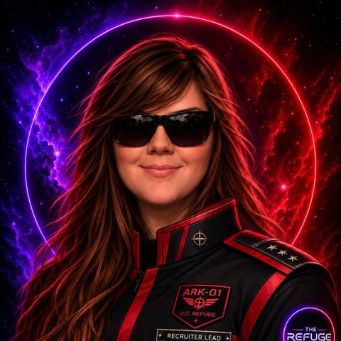
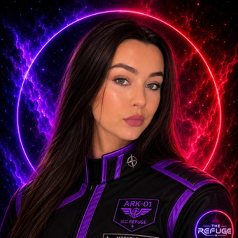

WHO'S ON DUTY
Meet the staff.
The people keeping the lights on, the brackets fair, and the talk shows on schedule. Ping them in-server if you need a hand.
HEAD OF SERVER
Lukas (with a K)
@Lukas
I'm Lukas with a K, Head of Server here at The Refuge and resident part-time gay. I oversee the overall direction of the Refuge Ark and work closely with our leadership and staff teams to keep each department moving forward. I'm extremely hands-on with the server, whether that means developing new ideas, planning events, improving our systems, supporting staff, or finding new ways to make The Refuge feel like an actual community rather than just another Discord server. I believe leadership is about serving the people around you, giving people opportunities to grow, and building something that can last long after any one person leaves.
You'll usually find me bouncing between departments, hanging out in voice chat, working on some unnecessarily ambitious new Refuge project. Feel free to reach out to me or any of the Refuge Staff, I am happy to assist or direct you to the correct staff member who can!
Welcome aboard the Ark, I'm glad you found us.
HEAD OF DEVELOPMENT
Jester
@Jester
I'm Jester, Head of Development for The Refuge. I'm the computer guy behind the scenes, usually working somewhere in the shadows of Lukas's metaphorical basement to keep the technical side of the Refuge Ark running smoothly.
When I'm not working on server development, troubleshooting, or building something new, I'm usually gaming and enjoying some downtime. I also come from a military background, which has shaped the way I approach responsibility, teamwork, and accountability. I tend to be direct, dependable, and focused on getting the job done — and while I'm always willing to help, I'm definitely not someone who has much patience for unnecessary nonsense.
EUROPEAN LEAD MODERATOR
Tex
@Texy
Transmitting… transmitting… is this thing even on? Oh! There we go! Ladies, gents, everyone and thing in-between. Howdy! @Tex here.
I like dogs, and long walks on the- wait, wrong bio.
Peeps, I'll be your resident European Lead Moderator for this ride! Fun fact: people think I'm from Texas and a lady! I wish. I'm a 21 year-old, born and bred dude from England.
I'm online and available mainly between the hours of 10:00am to 22:00pm (that's 5:00am to 5pm for y'all Americanos') for (most) all your needs, don't be shy.
You can mainly catch me lurking in calls or yapping in Tex-t chats (get it). Come find me and say hi! Pleasure, yours truly, Tex.
U.S. LEAD MODERATOR
Lex (Big Mama / YourFavFatGirl)
@✨Lex✨
I'm Big Mama or YourFavFatGirl, but you can also call me Lex! I'm the U.S.-based Lead Moderator here in the server, and I'm happy to help with whatever you need from 7am–9pm CST.
A little about me… well, I'm old. 33, to be exact. I love makeup, cars, dogs, and I ride horses from time to time — and no, I'm not talking about the animal. In my real life, I'm a mental health practitioner.
Don't ever be afraid to come say hi! If you need anything, have a question, or just need a little help, I'm always down to assist. Can't wait to get to know you all!

RECRUITER LEAD
Stephanie
@Stephanie
I'm @Stephanie, Recruiter Lead here at The Refuge. I spend much of my time helping grow our community, welcoming new people aboard, and working with the Recruitment team to find people who will genuinely add something to the Refuge.
Outside of the Ark, I'm into books, movies, gaming, and occasionally pretending I have my life together while finding creative ways to procrastinate and still somehow get everything done.
I'm always happy to chat, so if you see me around the server, don't hesitate to come say hi!
MODERATOR
Austin
I'm 27 and from Minnesota. Around the Ark, I help keep things running smoothly and make sure everyone has a place to enjoy the community.
Outside of The Refuge, you'll usually find me gaming, watching football, cooking, or picking up another hobby to spend way too much money on. I'm pretty laid-back and always down for a good conversation or some joking around.
If you ever need anything, or just see me around the server, feel free to come say what's up.

MODERATOR
Ellie
@Ellie
I'm from the United Kingdom. My life outside the Ark can get pretty busy, so you'll see me around a little more sporadically than some of our other moderators. When I am here, I help keep the community welcoming and make sure everyone has someone they can reach out to when they need it.
Outside of moderation, I enjoy spending time with my boyfriend, doing makeup, and getting ready with me events with all my Refuge girlies. I'm also probably one of the biggest voice chat yappers on the server whenever I get the chance to join. I'm incredibly passionate about saving sea lions and could happily talk about them for hours, so that's always an easy way to start a conversation with me. Most importantly, I firmly believe beans on toast qualifies as a meal for virtually any occasion.
If you ever need someone to talk to, want a girl's opinion, need help around the server, want to talk about sea lions, or just need some company while doing your makeup, feel free to reach out. Cheers!
SHIP'S RECORDS
Refuge history.
How a home for Discord events became a home, full stop.
-
APRIL 2026
The Ark is launched
The Refuge was founded with one mission in mind: to become a home for Discord events. Game nights, watch parties, live shows and community traditions shaped its earliest days, built on the idea that there should always be something happening somewhere aboard.
-
07/04/26 · UPDATE 1.0
The first crew call
With the community off to a strong start, the Ark opened its first big round of staff hiring: Moderators, Events Creators and Recruiters, so the ship could be run by its own members.
-
SUMMER 2026
From events to everyday
Somewhere along the voyage, people stopped showing up only for the next event and started showing up for each other. The Refuge grew into a place members log into every day because their friends, routines and favorite traditions are here.
-
09/13/26 · UPDATE 4.1
Quieter corners
Ark Hideaway and The Cellar opened as smaller four-person voice rooms, built for closer company and late-night talks.
-
09/21/26 · UPDATE 4.2
Server tags return
Thanks to the Server Boosters, members could once again wear the Refuge tag across Discord.
-
10/05/26 · UPDATE 5.0
A bot of our own
Jester launched the Refuge's own home-made bot, and with it, Traveling in the ARK: a game where crew travel space, collect valuables, open crates for pets and race for the top of the leaderboard.